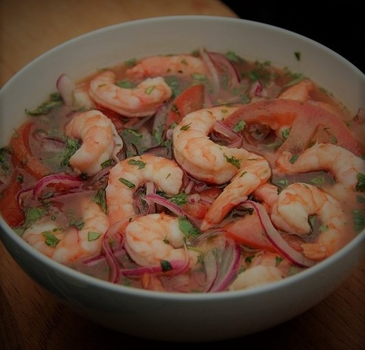
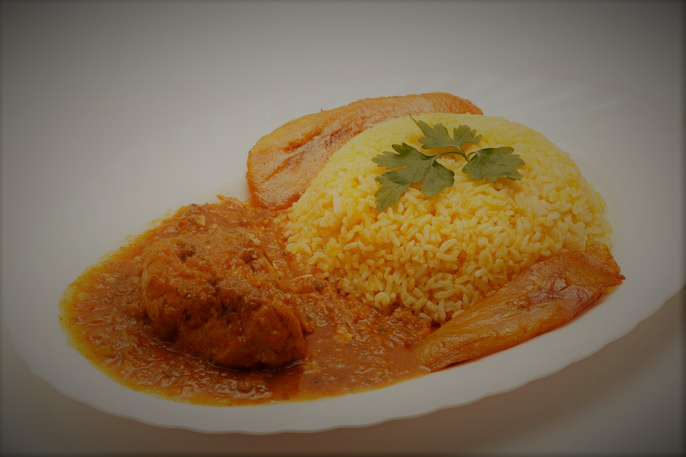
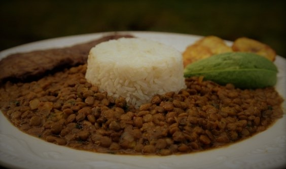
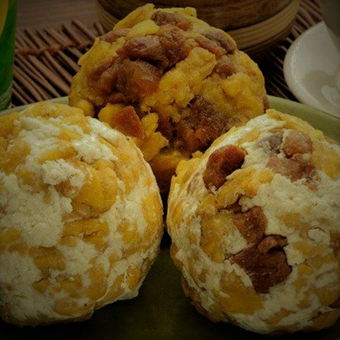
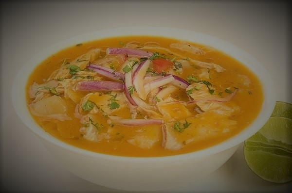

Recetas de la costa ecuatoriana
CEVICHE DE CAMARÓN

Porciones: 8 Tiempo: 1h
Receta de Carmen, Isla Trinitaria - Ecuador
Ingredientes
- - 2 libras de camarón
- - 2 cebollas coloradas
- - 4 tomates
- - 1 pimiento verde
- - Jugo de una naranja
- - Jugo de cuatro limones
- - Salsa de tomate
- - Sal a gusto
- - Un poco de mostaza
- - Cilantro a gusto
- - Pimienta a gusto
Proceso
- Lavar bien los camarones con limón y sal y luego en una olla lo ponemos a cocinar con agua y una pisca de sal.
- Dejar cocinar hasta que los camarones se pongan color naranja, reservar a un lado el agua con el que se cocinaron los camarones.
- Picar las cebollas, el tomate y el pimiento y reservar en un bol a parte.
- Por otro lado exprimir los limones y mezclar con el jugo de naranja, la salsa de tomate, un tomate licuado.
- Mezclar todo lo reservado anteriormente y servirlo con chifles o patacones y el cilantro.
SECO DE POLLO

Porciones: 8 Tiempo: 2hs
Receta de Carmen, Isla Trinitaria - Guayaquil
Ingredientes
- - 1 o 2 presas de pollo por persona
- - Achiote a gusto
- - 1 pimiento, 1 tomate, 1 cebolla colorada y ajo
- - Naranjilla una o dos
- - Aji peruano una pisca
- - Sal y pimienta a gusto
- - Cilantro a gusto
- - Sazon a gusto
Proceso
- Lavar las presas con limón y luego sazonarlas con sal, pimienta y sazon
- Licuar la cebolla, el tomate, el pimiento, la naranjilla y el ají peruano y echar a la olla con las presas de pollo, agregar ranchero si deseas y dejar cocinar durante 40 minutos.
- Agregar a la olla el achiote y agua en el caso de ser necesario.
- Si deseas espesarlo, mezclar en la licuadora harina con un poco de agua y echar en la olla
- Echar cilantro al final
- Servir con arroz amarillo, aguacates y maduro frito o patacones.
ARROZ CON MENESTRA DE LENTEJAS

Porciones: 8 Tiempo: 1h
Receta de Sra Carlota, Isla Trinitaria - Guayaquil
Ingredientes
- - 1/2 libra de lentejas
- - 1 pimiento
- - 1 cebolla colorada
- - 1 verde
- - 1 cda de achiote
- - 1 diente de ajo molido
- - Sal y pimienta a gusto
- - Filete de pollo o de carne uno o dos por persona
- - Cilantro opcional
Proceso
- Poner a hervir la lenteja con ajo, sal, un pedazo de cebolla colorada, un pedazo de pimiento, todo picado bien fino y achiote, hasta que la lenteja este tierna
- Rallar un verde en la misma lenteja para que de consistencia a la lenteja
- Agregarle hiervita si desea
- Servir con arroz
- Servir con arroz, patacones o platano maduro y el filete de carne.
BOLONES DE VERDE CON CHICHARRON Y QUESO - Desayuno

Porciones: 4 personas Tiempo: 55min
Receta de Sra Juanita A., Isla Trinitaria - Guayaquil
Ingredientes
- - 2 platanos
- - 150gs de chicharron
- - 150gs de queso fresco
- - 1/2 cda de sal
- - 1 cda de mantequilla
- - Aceite para freir
Proceso
- Cocinar los plátanos hasta que esten blandos, se pueden hervir o freir.
- Majarlos bien una vez ya cocinados
- Agregarle un poquito de mantequilla o del agua con los que se cocinaron los plátanos.
- Agregarle la sal, el chicharron y el queso fresco
- Forma bolas con las manos, del tamaño que gustes.
- Servirlo con café y huevo frito opcional.
ENCEBOLLADO - Desayuno

Porciones: 4 Tiempo: 45min
Receta de Sra Juanita P., Isla Trinitaria - Guayaquil
Ingredientes
- - 2 libras de pescado albacora sin espinas
- - 2 libras de yuca
- - 1 cda de comino
- - 2 cdas de ajo
- - Sal, pimienta y cilantro a gusto
- - 1 libra de cebolla
- - 2 ramas de cebolla blanca
- - 2 pimientos
- - 1 rama de apio si gusta
- - Aji peruano un poco si desea
Proceso
- En una olla grande picar la cebolla bien picada, la cebolla blanca y el pimiento, todo bien picado para hacer un refrito.
- Agrgar las dos cucharadas de ajo, sal,pimienta y comino.
- Agregar 3 lt de agua y cocinar el pescado previamente lavado.
- Agragar la yuca pelada en el mismo agua hasta que este blanda y sacarla a un costado para luego picarla.
- Agregar la hiervita y el apio si desea
- Si quiere el caldo con mas consistencia tomar un poco de yuca y licuarla y luego agregarla al caldo.
- Agregar el ají peruano si desea
- En casuela agregar el caldo, la yuca, el pescado y hiervita arriba.